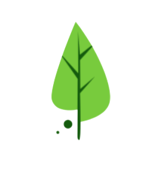

<!-- 좌측 사이드바 -->
<aside class="sidebar-collapsed fixed left-0 top-0 h-full bg-white text-gray-700 shadow-lg z-[9999] transform -translate-x-full lg:translate-x-0 transition-all duration-300" id="sidebar">
  <!-- 로고 섹션 -->
  <div class="p-4 border-b border-gray-100">
    <button id="sidebarToggle" class="flex items-center w-full hover:bg-gray-50 rounded-lg p-2 transition-colors">
      <div class="flex-shrink-0">
        
      </div>
      <div class="ml-3 text-left sidebar-text">
        <h1 class="text-lg font-semibold text-gray-900">홍숲쿨링</h1>
        <p class="text-xs text-gray-500">배움의 공간</p>
      </div>
      <div class="ml-auto sidebar-text">
        <span class="material-icons text-gray-400 sidebar-arrow">chevron_right</span>
      </div>
    </button>
  </div>
  
  <!-- 메뉴 섹션 -->
  <nav class="p-4">
    <ul class="space-y-2">
      <li>
        <a href="index.html" class="flex items-center p-3 rounded-lg hover:text-[#BDFCC9] transition-colors group" data-page="index">
          <span class="material-icons text-2xl flex-shrink-0 text-gray-600 group-hover:text-[#BDFCC9] transition-colors">home</span>
          <span class="ml-3 sidebar-text">홈</span>
        </a>
      </li>
      <li>
        <a href="create-meeting.html" class="flex items-center p-3 rounded-lg hover:text-[#BDFCC9] transition-colors group" data-page="create-meeting">
          <span class="material-icons text-2xl flex-shrink-0 text-gray-600 group-hover:text-[#BDFCC9] transition-colors">event</span>
          <span class="ml-3 sidebar-text">새 모임 만들기</span>
        </a>
      </li>
      <li>
        <a href="community.html" class="flex items-center p-3 rounded-lg hover:text-[#BDFCC9] transition-colors group" data-page="community">
          <span class="material-icons text-2xl flex-shrink-0 text-gray-600 group-hover:text-[#BDFCC9] transition-colors">groups</span>
          <span class="ml-3 sidebar-text">커뮤니티</span>
        </a>
      </li>
      <li>
        <a href="studies.html" class="flex items-center p-3 rounded-lg hover:text-[#BDFCC9] transition-colors group" data-page="studies">
          <span class="material-icons text-2xl flex-shrink-0 text-gray-600 group-hover:text-[#BDFCC9] transition-colors">chat_bubble</span>
          <span class="ml-3 sidebar-text">내 모임 관리</span>
        </a>
      </li>
      <li>
        <a href="notices.html" class="flex items-center p-3 rounded-lg hover:text-[#BDFCC9] transition-colors group" data-page="notices">
          <span class="material-icons text-2xl flex-shrink-0 text-gray-600 group-hover:text-[#BDFCC9] transition-colors">campaign</span>
          <span class="ml-3 sidebar-text">공지사항</span>
        </a>
      </li>
      <li>
        <a href="mypage.html" class="flex items-center p-3 rounded-lg hover:text-[#BDFCC9] transition-colors group" data-page="mypage">
          <span class="material-icons text-2xl flex-shrink-0 text-gray-600 group-hover:text-[#BDFCC9] transition-colors">person</span>
          <span class="ml-3 sidebar-text">마이페이지</span>
        </a>
      </li>
    </ul>
  </nav>
</aside>

<!-- 사이드바 오버레이 (모바일) -->
<div id="sidebarOverlay" class="fixed inset-0 bg-black bg-opacity-50 z-40 lg:hidden hidden"></div>

<style>
  /* 사이드바 접힌 상태 */
  .sidebar-collapsed {
    width: 80px;
    overflow: hidden;
    z-index: 9999;
  }
  
  /* 사이드바 확장 상태 */
  .sidebar-expanded {
    width: 280px;
    z-index: 9999;
  }
  
  /* 접힌 상태에서 텍스트 숨김 */
  .sidebar-collapsed .sidebar-text {
    opacity: 0;
    visibility: hidden;
    width: 0;
    overflow: hidden;
  }
  
  /* 확장 상태에서 텍스트 표시 */
  .sidebar-expanded .sidebar-text {
    opacity: 1;
    visibility: visible;
    width: auto;
  }
  
  /* 텍스트 전환 효과 */
  .sidebar-text {
    transition: all 0.3s ease;
    white-space: nowrap;
  }
  
  /* 화살표 회전 */
  .sidebar-arrow {
    transition: transform 0.3s ease;
  }
  
  /* 메뉴 아이템 호버 효과 - 아이콘에만 색상 적용 */
  .sidebar-menu-item:hover .material-icons {
    color: #0A5C36 !important;
  }
  
  .sidebar-expanded .sidebar-arrow {
    transform: rotate(180deg);
  }
  
  /* 활성 페이지 스타일 - 아이콘에만 색상 적용 */
  .sidebar-active .material-icons {
    color: #0A5C36 !important;
  }
  
  
  /* 사이드바 기본 스타일 */
  #sidebar {
    background: white;
    box-shadow: 2px 0 10px rgba(0, 0, 0, 0.1);
    border-right: 1px solid #e5e7eb;
  }
  
  /* 메인 콘텐츠 영역이 사이드바에 가려지지 않도록 */
  .sidebar-expanded ~ * {
    margin-left: 280px;
    transition: margin-left 0.3s ease;
  }
  
  .sidebar-collapsed ~ * {
    margin-left: 80px;
    transition: margin-left 0.3s ease;
  }
  
  /* 모바일에서 사이드바 설정 */
  @media (max-width: 1023px) {
    #sidebar {
      width: 280px !important;
      z-index: 9999 !important;
    }
    
    /* 모바일에서 사이드바가 표시된 상태일 때 */
    #sidebar.mobile-visible {
      transform: translateX(0) !important;
    }
    
    #sidebar .sidebar-text {
      opacity: 1 !important;
      visibility: visible !important;
      width: auto !important;
    }
    
    /* 모바일에서는 마진 조정 안함 */
    .sidebar-expanded ~ *,
    .sidebar-collapsed ~ * {
      margin-left: 0 !important;
    }
  }
</style>

